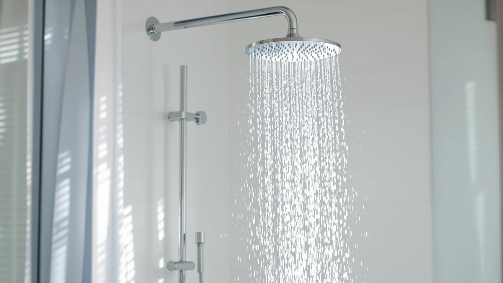

Best Rainfall vs Regular Shower Head (2026) | Best Shower Heads
Prices and picks verified as of August 2026. Independent, reader-supported reviews.


Things to Know Before You Buy
- Coverage vs force: A rainfall head drenches your whole head and shoulders at once. A regular head gives you a tighter, stronger stream you can aim where you want.
- Water pressure decides a lot: Below about 45 psi, a wide rainfall head can feel weak. A regular or high-pressure head holds up better in low-pressure homes.
- Flow rate is the same: Both top out at 2.5 gallons per minute in the US, so neither style wastes more water on its own.
- Install effort differs: Wall-mount rainfall heads swap in like any regular head. Ceiling-mount rainfall setups need a plumber.
- Budget overlaps: You can find good rainfall and regular heads for $25 to $50, so price rarely forces the choice.
The rainfall vs regular shower head choice comes down to how you want water to hit your body. Neither is objectively better. A rainfall head hangs above you and pours a wide, soft sheet straight down, the kind of slow soak that turns a morning shower into something closer to a spa minute. A regular shower head sits at an angle off the wall and pushes a tighter, faster stream you can lean into to rinse soap and shampoo quickly.
You are really choosing between two feelings: coverage or force. We have set up and used both styles in bathrooms with strong and weak water pressure, and the right pick changes depending on your plumbing and how you shower. If you share the bathroom with kids or tall family members, that shifts the answer too. Below, we cover what each type actually is, how they compare on build, price, and daily use, and which one suits which kind of bathroom.
Quick Answer
Between a rainfall vs regular shower head, the rainfall head wins for relaxation and full-body coverage if your water pressure is decent, while a regular head wins for strong, fast rinsing and low-pressure homes. Pick rainfall if you want a calm, drenching soak and have solid pressure. Pick a regular head if you want force, easy aiming, or you fight weak water pressure.
What is Rainfall?
A rainfall shower head is a large, flat face, usually 8 to 12 inches across, that mounts overhead and releases water straight down through dozens of evenly spaced nozzles. Instead of one concentrated jet, you stand under a broad curtain of droplets that covers your head and shoulders at once. That is the appeal of a rainfall head: the water surrounds you rather than targeting one spot.
Most affordable rainfall heads, like the 8-inch model we use as our editor's pick, mount on an extended or angled arm so the face tilts above you on a standard wall connection. Pricier or built-in versions mount flush in the ceiling for a true straight-down pour, though those need plumbing run through the ceiling. Because the same flow spreads across a wide area, each individual stream lands gently, which is why a rainfall shower feels soft and immersive.
The trade-off is force. With your water capped at 2.5 gallons per minute, spreading that flow over a 10-inch face means no single stream hits hard. In a home with strong pressure you barely notice. In a low-pressure home the rainfall can feel like a light drizzle, which is the main reason this style does not suit every bathroom.
What is Regular Shower Head?
A regular shower head is the standard wall-mounted fixture most of us grew up with: a round or oval face, usually 3 to 6 inches across, angled off the wall on a short arm. It pushes water through a smaller cluster of nozzles, so the same flow comes out faster and harder through a tighter spray pattern. Force and control are what a regular head sells you.
Many regular heads add spray settings you switch with a twist of the face. The BESAQUO model we reference runs 10 functions, from a wide soft rinse to a concentrated massage jet, so one head covers several moods. Others, like the Moen Engage, pair a compact fixed head with a magnetic handheld you can pull down to rinse a child, a pet, or the shower walls, then snap back into place.
Because a regular head concentrates flow, it rinses shampoo and soap quickly and holds its punch even when household pressure dips. You can aim it, you can stand to the side and stay partly dry, and you can swap it onto any standard arm in a few minutes. The downside is coverage: you get a strong stream on one part of your body rather than the all-over soak a rainfall head gives.
Head-to-Head: Build Quality & Durability
Build quality splits the two styles in a way the marketing photos hide. A large rainfall face has more surface area, which means more nozzles that can clog with mineral scale and more chrome-plated plastic to crack if you knock it. Budget rainfall heads under $30 lean heavily on ABS plastic with a shiny coating, and that coating dulls or peels after a year or two in a hard-water home. The all-metal Veken head exists for exactly that reason: solid brass and stainless parts shrug off scale and survive being bumped during cleaning.
Regular shower heads carry an edge on durability simply because they are smaller and simpler. Fewer nozzles mean fewer points to clog, and a compact body has less plastic to flex or snap. The Moen Engage uses a metal connection and a self-cleaning rubber nozzle face you wipe with a thumb to break up buildup. That kind of design lasts for years with almost no upkeep.
The silicone nozzle tip is the feature that matters most for either style. Whether you go rainfall or regular, pick a head with flexible rubber nozzles you can rub clean, and you sidestep the slow clogging that kills cheap fixtures. If you have hard water, spend up for metal construction on the rainfall side, since plastic rainfall faces age the fastest of anything here.
Head-to-Head: Price & Value
Price barely separates the two styles at the entry level, so the choice is about preference, not budget. A capable rainfall head like the 8-inch pick runs about $30, and a feature-packed regular head such as the BESAQUO 10-function sits around $35. You can equip either bathroom for under $50. Where the gap opens is at the top. A wide all-metal rainfall head climbs to $90, while a premium regular head like the Moen Engage lands near $40 even with its magnetic handheld dock.
For long-term value, weigh how long the finish lasts against what you paid. A $30 plastic rainfall head that fades in 18 months costs you more per year than a $40 metal regular head that holds up for five. If you want the rainfall look on a tight budget, accept that you may replace it sooner. If you want to buy once, the metal options on either side earn their higher sticker.
Head-to-Head: Use Experience
Daily use is where the difference becomes obvious, and it cuts both ways depending on what you want from a shower. Step under a rainfall head with good pressure and water falls evenly over your whole upper body. You stand still, you relax, and the soft, warm sheet feels genuinely calming after a long day. The catch shows up the moment you try to rinse conditioner from long hair, since the gentle droplets take longer to push suds out than a focused stream does.
A regular head flips that experience. The tighter spray rinses soap and shampoo fast, and you can tilt or swivel it to hit your back or aim away while you adjust the temperature. Models with a handheld wand, like the Moen Engage, make washing kids, rinsing the tub, or bathing a dog far easier than any fixed rainfall head. You trade the all-over soak for speed and control.
Two practical notes from setup. Tall users often prefer rainfall heads because the overhead mount clears the top of the head instead of spraying the chest. Cold bathrooms favor regular heads, since a wide rainfall sheet loses heat to the air on the way down and can feel cooler at the body than the temperature you set. Match the style to how you actually shower, not the photo that sold you.
When to Choose Rainfall
Choose a rainfall shower head when relaxation ranks above raw force and your home has decent water pressure, roughly 45 psi or higher. It is the right call if you like a slow, drenching soak, if you are tall enough that an overhead pour clears your head, or if you are building a spa-style bathroom where the look matters. It also suits anyone who showers to unwind rather than to get clean in three minutes flat. If your pressure is strong and you have hard water, step up to an all-metal rainfall head so the wide face resists scale and lasts. Skip rainfall if your pressure is weak, your bathroom runs cold, or you have thick hair that needs a forceful rinse.
When to Choose Regular Shower Head
Choose a regular shower head when you want force and control over a luxury soak. It fits you if your water pressure is low, since a concentrated stream stays strong where a wide rainfall sheet goes limp. It is the better call for fast morning showers, for thick or long hair that needs power to rinse, and for households that share a shower with kids or pets, where a magnetic handheld like the Moen Engage earns its keep. A regular head also wins in a cold bathroom, because the tighter spray loses less heat between the wall and your body. Pick a multi-function model such as the BESAQUO 10-spray if different family members want different feels from the same head. Choose rainfall instead only when you have the pressure to back it up.
Our Top Picks
If you are leaning toward the rainfall feel, these three heads cover the range from budget to premium. Each mounts on a standard wall arm, so you can install any of them yourself in about 10 minutes.

Editor’s Pick
Shower Head 8”Rain Shower Head
An 8-inch face that delivers the rainfall soak for about $30, the easiest way to test the style before spending more.
$29.99
Check Price on Amazon
Best Value
Voolan Rain Shower Head -
Broad coverage at a fair price, a solid middle pick for standard-pressure bathrooms that want a relaxed soak.
$33.99
Check Price on Amazon
Premium Choice
Veken 11.8" Rain Shower Head
A wide 11.8-inch canopy for full-body coverage, the pick if you have strong pressure and want the most immersive pour.
$29.99
Check Price on AmazonDoes a rainfall shower head have less pressure than a regular one?
Usually, yes.
Can I install a rainfall shower head myself?
You can install most wall-mount rainfall heads in about 10 minutes with plumber's tape and no special tools.
Frequently Asked Questions
Does a rainfall shower head have less pressure than a regular one?
Usually, yes. A rainfall head spreads the same gallons per minute across a much wider face, so each stream lands softer. A regular shower head concentrates flow through fewer nozzles, which feels stronger. If your home has low water pressure, a regular head will feel more forceful than a wide rainfall head.
Can I install a rainfall shower head myself?
You can install most wall-mount rainfall heads in about 10 minutes with plumber's tape and no special tools. They thread onto the same standard 1/2-inch arm a regular head uses. Ceiling-mount rainfall heads are harder, since they often need a new water line run through the ceiling, which is a job for a plumber.
Does a rainfall shower head use more water?
Not by design. Both rainfall and regular shower heads sold in the US cap at 2.5 gallons per minute, and many are rated at 1.8 to 2.0 to meet stricter state rules. The flow rate stamped on the box matters more than the style, so a wide rainfall head and a compact regular head with the same rating use the same water.
Which is better for long or thick hair?
A regular head, in most cases. The concentrated stream pushes shampoo and conditioner out of dense hair faster than a soft rainfall sheet. If you love the rainfall look but have thick hair, choose a model with a high-pressure setting or keep a handheld wand on hand for rinsing.
Can I have both a rainfall and a regular head?
Yes. A dual setup pairs an overhead rainfall head with a handheld or fixed regular head on a diverter valve, so you switch between the soak and the strong stream or run both. It costs more and takes longer to install, but you get the soak and the strong stream on demand, so you never have to pick one.
Final Verdict
The rainfall vs regular shower head choice has no single winner, only a better fit for how you shower. Go rainfall, like the 8-inch Shower Head editor's pick, when you have solid water pressure and want a soft, full-body soak that turns a shower into a wind-down. Go regular, like the Moen Engage with its magnetic handheld, when you want strong, fast rinsing, easy aiming, or you fight low pressure and cold air. Match the style to your plumbing and your routine, and either type will serve you for years.